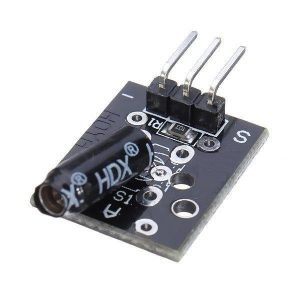
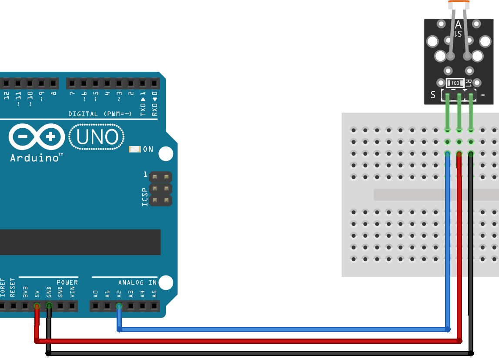

KY-002 Shock Vibration Switch Sensor
|  | .jpg) |
ОписаниеОсновной элемент датчика – металлическая пружина гибкой структуры, расположенная во внутренней части трубки из пластика. При наличии каких-либо воздействий на нее она начинает колебаться. Усиление сигнала происходит за счет его подачи сначала на операционный усилитель, а потом на выход аналогового типа. Важным элементом датчика вибрации является потенциометр, который регулирует чувствительность прибора, и позволяет устанавливать необходимый порог срабатывания. Датчик вибрации имеет три выхода: • Земля; • Питание; • Выход аналогового сигнала А0. Находящийся на плате потенциометр позволяет настроить его чувствительность. Он представляет собой переменный резистор c сопротивлением регулируемого типа. На плате датчика также присутствуют светодиоды, которые сигнализируют о наличии питания. Кроме того, некоторые разновидности оснащаются цифровым выводом D0, который выдает логический ноль при достижении порогового значения уровня вибрации. | |
Код подключения к Ардуино#define PIN_LED 13#define PIN_SENSOR 2 // Пин, ккотормоу присоединен датчик вибрации void setup() { pinMode(PIN_LED, OUTPUT); } void loop() { int val = digitalRead(PIN_SENSOR); // Считваем значение с датчика if(val==1){ digitalWrite(PIN_LED, HIGH); // Датчик сработад – включаем светодиод }else{ digitalWrite(PIN_LED, LOW); } } | |
Источники | |
KY-018 Фоторезистор
.jpg) |
 |
Описание“KY-018″ — модуль содержит фоторезистор (датчик освещенности), который может применяться для измерения интенсивности света или определения его наличия/отсутствия. При отсутствии света сопротивление фоторезистора большое и доходит до 1 мОм, а при его освещении падает до нескольких Ом. Фоторезисторы – это полупроводниковые фоточувствительные устройства (сенсоры), которые имеют высокую чувствительность, быстрый отклик, устойчивые спектральные характеристики и широко применяются в видеокамерах, в садовых светильниках на солнечных батареях, датчиках освещенности, ночниках и других устройствах контроля освещения. | |
Код подключения к Ардуиноint sensorPin = 2; //define analog pin 2 int value = 0; void setup() { Serial.begin(9600); } void loop() { value = analogRead(sensorPin); Serial.println(value, DEC); // light intensity // high values for bright environmen // low values for dark environment delay(100); } | |
Источники | |
KY-008 Red Laser Head Transmitter Module
.jpg) |
.png) |
ОписаниеЭто устройство Keyes - одно из наиболее распространенных устройств в наборах датчиков Arduino. В сочетании с другими компонентами его можно использовать для создания растяжек или оптических эффектов. KY-008 особенно удобен, потому что он может питаться напрямую от выходного контакта Arduino, поскольку он потребляет только 30 мА от процессора, который имеет выходы, рассчитанные на 40 мА. | |
Код подключения к Ардуиноint laserPin = 10; void setup () { pinMode (laserPin, OUTPUT); // define the digital output interface 13 feet } void loop () { laserEmiter(laserPin,15,5); } void laserEmiter(int laserPin,int timeToBurn,int timeToRest){//made by Ilja Kazantsev digitalWrite (laserPin, HIGH); // Turn Laser On delay (timeToBurn);// delay while it burns digitalWrite (laserPin, LOW); // Turn Laser Off delay (timeToRest);//delay till new cicle } void setup () { pinMode (laserPin, OUTPUT); // define the digital output interface 13 feet } void loop () { laserEmiter(laserPin,15,5); } void laserEmiter(int laserPin,int timeToBurn,int timeToRest){//made by Ilja Kazantsev digitalWrite (laserPin, HIGH); // Turn Laser On delay (timeToBurn);// delay while it burns digitalWrite (laserPin, LOW); // Turn Laser Off delay (timeToRest);//delay till new cicle } | |
Источники | |